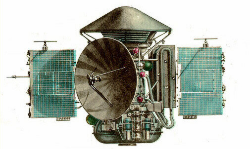
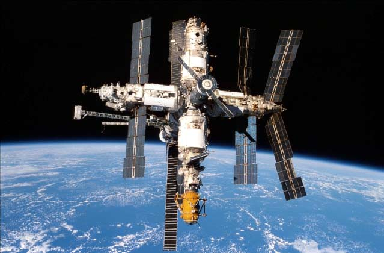

in 1942 the German V2 was the first rocket to reach 100km from the Earth’s surface (the boundary of space).
The rocket was designed by Wernher Von Braun, who later worked with NASA as the creator of the rockets that went to the moon.
In 1947, the first animals were launched into space. Fruit flies were used to study the effects of space travel on animals, and were chosen because they are more similar to humans than you might imagine!
The flies travelled with a supply of corn to eat on the flight.
Albert II, was the first monkey in space. He was a Rhesus monkey, a type of monkey that originally comes from Asia.
Albert went into space on 14th June, 1949 in a specially adapted American V2 rocket, that flew to a height of 83 miles from earth.
In November 1957, the Russian space dog Laika became the first animal to orbit the earth.
Laika travelled in a spacecraft known as Sputnik 2. Laika means "Barker" in Russian, and her mission helped scientists understand whether people could survive in space.
On 12th April 1961, Russian Cosmonaut Yuri Gagarin became the first man in space. Gagarin's spacecraft, Vostok 1, completed one orbit of the earth, and landed about two hours after launch.
Gagarin had to bail out and land using his parachute, because the Vostok 1 was designed to crash land!

The first woman in space was Russian cosmonaut Valentina Tereshkova.
After her 1963 mission, Valentina became an important member of the Russian Government, and has been awarded many honours and prizes for her achievements. A crater on the far side of the Moon is named after her!
On 20th July 1969, Neil Armstrong, and then Buzz Aldrin took "one small step" and became the first men on the moon. The first words said on the moon were "the Eagle has landed". Their spaceship, Apollo 11 worked perfectly, flying them 250,000 miles to the moon, and bringing them all the way back safely to earth. Buzz was a childhood nickname - his real name was Edwin!
in 1973, Russian space probe Mars 2 explored Mars, the fourth planet of the solar system.
The probe was made of two parts. One part stayed in orbit for a year, sending pictures of Mars back to earth. The other was to land and explore the surface of Mars, but it was destroyed when its parachute failed to open.

The MIR space station was built in sections, each piece launched by a rocket and then joined together in orbit. Construction started in 1986, with the last piece being fitted ten years later!
MIR was the first consistently inhabited long-term space station. MIR was destroyed in 2001 when it burned up as it crashed back to earth.

On June 21st, 2004, SpaceShipOne made the first ever privately funded manned space flight. This space plane was built by a private aviation firm to win the 10 million dollar Ansari X Prize.
A new Airline, Virgin Galactic has been set up to offer private tourist flights into space, using a new version of this space plane. Despite a terrible crash in testing in 2014 in which a pilot was tragically killed,
tickets remain available for flights starting around 2015.
On June 21st, 2004, SpaceShipOne made the first ever privately funded manned space flight. This space plane was built by a private aviation firm to win the 10 million dollar Ansari X Prize.
A new Airline, Virgin Galactic has been set up to offer private tourist flights into space, using a new version of this space plane. Despite a terrible crash in testing in 2014 in which a pilot was tragically killed,
tickets remain available for flights starting around 2015.